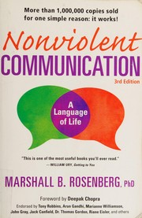
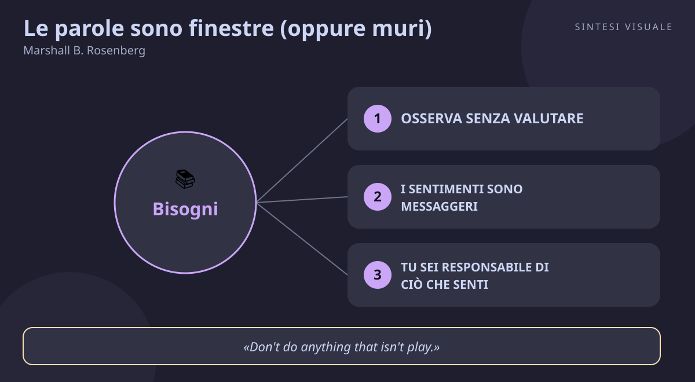

Home / Libri / Le parole sono finestre (oppure muri)

Le parole sono finestre (oppure muri)
Marshall B. Rosenberg · Emozioni e comunicazione
«Le parole sono finestre (oppure muri)»
- Osserva senza valutare
- Sentimenti messaggeri
- Chiedi non pretendere
- Empatia
📘Riassunto
La scintilla centrale. Siamo stati educati a parlare per giudizi — chi ha ragione e chi ha torto, chi è bravo e chi è cattivo — e questo linguaggio morale ci fa litigare anche quando vorremmo collaborare: Rosenberg propone un metodo in quattro passi (osservare, sentire, collegare al bisogno, chiedere) che trasforma ogni giudizio in un ponte verso l'altro.
La struttura logica. La prima parte smaschera la comunicazione che blocca la compassione: giudizi moralistici, confronti, negazione di responsabilità, pretese mascherate da richieste. La seconda costruisce il metodo CNV: osservare i fatti senza valutare, nominare i sentimenti, collegarli ai bisogni universali, formulare richieste concrete e positive. La terza allarga lo sguardo: ricevere con empatia anche insulti e critiche, esprimere pienamente la rabbia senza aggredire, risolvere i conflitti e usare il potere con gli altri invece che sugli altri.
Il punto di svolta. Dietro ogni rabbia e ogni critica c'è un bisogno insoddisfatto, mai un nemico: quando senti qualcuno dirti cosa c'è di sbagliato in te, non ascoltare l'analisi — ascolta il dolore e il bisogno che sta dietro le parole. Cambia tutto: smetti di difenderti e inizi a collaborare.
L'eredità oggi. La Comunicazione Nonviolenta è insegnata in oltre 60 paesi, nelle scuole, nelle carceri, nelle aziende e nella mediazione dei conflitti; i suoi quattro passi sono diventati la base di gran parte della formazione moderna su empatia, feedback e gestione dei conflitti.
💡Concetti chiave
- Osserva senza valutare: descrivi i fatti come una telecamera, non come un giudice.
- I sentimenti sono messaggeri: ogni emozione segnala un bisogno soddisfatto o insoddisfatto.
- Tu sei responsabile di ciò che senti: nessuno ti fa arrabbiare, la causa è il tuo bisogno.
- Chiedi, non pretendere: la richiesta vera lascia libero l'altro di dire no.
- Ricevi con empatia: dietro ogni attacco c'è una richiesta d'aiuto mascherata.
- Esprimi la rabbia senza aggredire: usa la collera come bussola, non come arma.
📖1. Osserva senza valutare
- Definizione l'osservazione CNV descrive ciò che è successo in modo concreto e verificabile — cosa, quando, quanto — senza mescolarci giudizi, etichette o diagnosi sul carattere dell'altro.
- Esempio invece di "sei sempre in ritardo e non ti importa niente di noi", dici: "nelle ultime tre riunioni sei arrivato dopo le 9:30, mentre l'orario concordato è le 9:00".
- Come applicarlo prima di parlare, fai il test della telecamera: la tua frase potrebbe essere registrata da una videocamera? Se contiene parole come sempre, mai, pigro, egoista, irresponsabile, riscrivila con fatti e numeri.
- Errore comune credere che il giudizio sia più efficace perché "scuote" l'altro: in realtà attiva difese e controattacchi, e la conversazione muore lì.
- Collegamento richiama il Sistema 2 di Daniel Kahneman (Pensieri lenti e veloci): rallentare e descrivere i fatti frena il giudizio automatico del Sistema 1.
📖2. I sentimenti sono messaggeri
- Definizione i sentimenti non sono buoni o cattivi in sé: sono segnali che ti dicono se un tuo bisogno profondo è soddisfatto (gioia, sollievo, gratitudine) o insoddisfatto (rabbia, tristezza, paura, frustrazione).
- Esempio la sera torni a casa esausto e scatti con tuo figlio che fa rumore: la rabbia non significa "lui è insopportabile", significa "ho bisogno di riposo e quiete dopo una giornata pesante".
- Come applicarlo amplia il tuo vocabolario emotivo oltre "bene/male": tieni una lista di sentimenti (irritato, deluso, preoccupato, sollevato, grato, entusiasta) e ogni sera nomina i tre provati durante il giorno e il bisogno collegato.
- Errore comune dire "mi sento ignorato, manipolato, escluso": non sono sentimenti ma interpretazioni di ciò che gli altri ti fanno — e suonano già come accuse.
- Collegamento dialoga con Intelligenza emotiva di Daniel Goleman: nominare con precisione ciò che provi (autoconsapevolezza) è il primo passo per gestirlo.
📖3. Tu sei responsabile di ciò che senti
- Definizione secondo Rosenberg ciò che gli altri fanno può essere lo stimolo, ma mai la causa dei nostri sentimenti: la causa è sempre il nostro bisogno — gli altri non ti fanno arrabbiare, è il tuo bisogno inascoltato che ti fa arrabbiare.
- Esempio il cliente che dice "la vostra offerta è ridicola" ti fa infuriare solo se hai bisogno di approvazione e competenza riconosciuta; se sei saldo sul valore che porti, la stessa frase diventa un dato da esplorare, non un'offesa.
- Come applicarlo quando senti salire l'emozione, spostati dallo stimolo al bisogno con la frase "mi sento... perché ho bisogno di...": "mi sento teso perché ho bisogno di chiarezza sui tempi di consegna".
- Errore comune scaricare la responsabilità con "mi hai fatto arrabbiare" o "è colpa tua se sto male": trasforma l'altro nel colpevole e ti rende impotente, perché solo lui potrebbe "aggiustarti".
- Collegamento è lo stesso principio degli stoici (Epitteto: non i fatti ma i giudizi ci turbano) e della terapia cognitiva di Feeling Good di David Burns.
📖4. Chiedi, non pretendere
- Definizione una richiesta CNV è concreta, positiva (dice cosa vuoi, non cosa non vuoi), fattibile nel presente — e lascia l'altro davvero libero di dire no; se il no ti fa punire o colpevolizzare, era una pretesa, non una richiesta.
- Esempio invece di "smettila di interrompermi" (negativa e vaga), dici: "quando presento il progetto, mi aiuteresti lasciandomi finire i tre punti prima di fare domande?".
- Come applicarlo formula ogni richiesta in tre mosse — azione osservabile, momento preciso, linguaggio positivo: chi, fa cosa, entro quando; poi verifica: "saresti disposto a dirmi se questa proposta ti va bene o no?".
- Errore comune mascherare ordini da richieste ("potresti per favore... o ne parliamo col capo?") e poi offendersi al rifiuto: distrugge la fiducia più di un ordine onesto.
- Collegamento richiama Getting to Yes di Fisher e Ury: separa le persone dal problema e inventa opzioni concrete invece di irrigidirti sulle posizioni.
📖5. Ricevi con empatia
- Definizione ricevere con empatia significa ascoltare oltre le parole — anche insulti e critiche — per cogliere osservazione, sentimento, bisogno e richiesta impliciti dell'altro, senza difenderti, correggere o consolare in fretta.
- Esempio il collega sbotta "questo piano è assurdo, non hai capito niente": invece di ribattere, rispondi "sembri molto preoccupato... hai bisogno di rassicurazioni sui tempi perché hai già troppi progetti addosso?".
- Come applicarlo quando l'altro attacca, fai pausa e parafrasa con una domanda: "quando dici... ti senti... perché hai bisogno di...?"; resta sull'ascolto finché l'altro non si sente capito, e solo dopo porta la tua parte.
- Errore comune i dodici assassini dell'empatia elencati da Rosenberg: consigliare, consolare in fretta, raccontare la tua storia, interrogare, spiegare, correggere — tutti modi per scappare dall'ascolto vero.
- Collegamento dialoga con Never Split the Difference di Chris Voss: l'etichettatura delle emozioni ("sembra che tu sia...") calma l'altro proprio perché si sente compreso.
📖6. Esprimi la rabbia senza aggredire
- Definizione la rabbia è un segnale prezioso che ti dice "un mio bisogno importante non è soddisfatto e sto pensando in termini di colpa": esprimerla pienamente significa descrivere bisogno e richiesta, non punire chi la scatena.
- Esempio il fornitore manca per la terza volta la consegna: invece di "siete degli incompetenti, vi denuncio", dici "sono molto arrabbiato perché ho bisogno di affidabilità verso i miei clienti: possiamo concordare una data certa con una penale se salta?".
- Come applicarlo quando ribolli, fermati e fai i quattro passi dentro di te — cosa è successo davvero, cosa sento, di cosa ho bisogno, cosa chiedo di concreto — e solo dopo parla; se serve, prenditi una pausa dichiarata.
- Errore comune i due estremi gemelli — esplodere per "sfogarsi" (la ricerca mostra che sfogare la rabbia aggredendo la alimenta) oppure ingoiarla fino a scoppiare o ammalarsi.
- Collegamento richiama Il lato positivo dello stress di Kelly McGonigal e Agilità emotiva di Susan David: l'emozione accolta e nominata diventa energia utile, quella negata o agita diventa veleno.
💬Citazioni da ricordare
"Don't do anything that isn't play." — Non fare nulla che non sia gioco: agisci per il desiderio di contribuire alla vita, non per paura, senso di colpa, vergogna o dovere. Conta perché smaschera metà della nostra stanchezza: non è il lavoro a sfinirci, è farlo per obbligo.
"Never hear what somebody thinks about you, you'll live longer. You'll enjoy life more." — Non ascoltare mai ciò che qualcuno pensa di te: vivrai più a lungo e godrai di più la vita. Conta perché ti libera dalla trappola del giudizio: dietro ogni critica cerca il bisogno, non l'offesa.
"Empathy is a respectful understanding of what others are experiencing... we simply listen for their observations, feelings, needs, and requests." — L'empatia è comprendere con rispetto ciò che gli altri vivono: ascoltiamo semplicemente osservazioni, sentimenti, bisogni e richieste. Conta perché definisce l'ascolto vero: svuotare la mente e stare con l'altro, non preparare la risposta.
🌍Esempi di oggi
- Il messaggio nel gruppo di lavoro. Il capo scrive "chi ha fatto questo report?" e parte la caccia al colpevole. Con la CNV diventa: "nel report mancano i dati di ottobre (osservazione), sono preoccupato (sentimento) perché ho bisogno di affidabilità prima della riunione col cliente (bisogno): chi può integrare i dati entro le 17:00 (richiesta)?" — stesso problema, zero processo alle intenzioni.
- La lite per le faccende di casa. Lei dice "non fai mai niente in casa", lui ribatte "esageri sempre": due giudizi, nessun bisogno nominato. Con la CNV: "quando vedo i piatti di ieri nel lavello mi sento stanco perché ho bisogno di ordine e sostegno: saresti disposto a occupartene tu stasera?" — il conflitto diventa organizzazione.
- Il cliente che alza la voce al telefono. "Il vostro servizio fa schifo, voglio parlare col responsabile!" L'operatore allenato non si difende: "vedo che è molto arrabbiato... ha bisogno di una soluzione rapida perché è fermo da due giorni? Vediamo insieme cosa posso fare subito." — dietro l'insulto c'era solo un bisogno urgente.
🛠️Azioni pratiche
- Per tre giorni, sostituisci un giudizio al giorno con un'osservazione da telecamera: scrivila la sera sul telefono (fatto osservato, sentimento, bisogno, richiesta possibile).
- Nella prossima conversazione difficile, prima di rispondere fai una sola domanda empatica ("ti senti... perché hai bisogno di...?") e ascolta fino in fondo senza interrompere.
- Trasforma una lamentela ricorrente ("non ho mai tempo", "non mi ascolta nessuno") in una richiesta concreta, positiva e negoziabile a una persona precisa, entro una data precisa.
Da portare a casa: le parole possono essere muri che dividono o finestre che collegano: la scelta è in ogni frase che pronunci.
Approfondimento in chat: rispondi con il numero di un concetto (1–6) per espanderlo con altri esempi e dialoghi guidati, oppure chiedimi un tema collegato — gestione della rabbia, feedback senza ferire, dire di no senza sensi di colpa, negoziazione empatica, comunicazione di coppia...
📄
# Le parole sono finestre (oppure muri) — Marshall B. Rosenberg
Titolo: Le parole sono finestre (oppure muri). Introduzione alla comunicazione nonviolenta · Autore: Marshall B. Rosenberg · Anno: 1999 (PuddleDancer Press, ed. italiana Esserci; ed. aggiornata Nonviolent Communication: A Language of Life, 3ª ed. 2015)
Questo libro conta oggi perché quasi ogni conflitto — in casa, al lavoro, sui social — nasce non da interessi inconciliabili ma da parole che feriscono: Rosenberg, psicologo clinico allievo di Carl Rogers che ha portato i suoi laboratori di pace dal Ruanda ai Balcani alle scuole americane, mostra che possiamo litigare senza farci male. È utile a chiunque: genitori e partner, venditori e negoziatori, capi e colleghi, e chiunque voglia gestire stress ed emozioni senza esplodere né chiudersi.
🖼️In un colpo d’occhio

Tocca l’immagine per ingrandirla.